创建型模式
关注对象地创建过程，将对象地创建和使用分离，在使用对象时无需关心对象地创建细节，从而降低系统的耦合度，让设计方案更易于修改和扩展。 创建型模式回答的三个问题：
- 创建什么
- 由谁创建
- 何时创建
| 模式名称 | 定义 |
|---|---|
| 单例模式 | 确保一个类只有一个实例，而且自行实例化并向整个系统提供这个实例 |
| 简单工厂模式 | 定义一个工厂类，它可以根据不同的参数返回不同类的实例，被创建的实例通常具有相同的父类 |
| 工厂方法模式 | 定义一个用于创建对象的接口，让子类决定将哪一个类实例化 |
| 抽象工厂模式 | 提供一个创建一系列相关或相互依赖对象的接口，而无需指定它们的具体类 |
| 原型模式 | 使用原型实例指定创建对象的种类，并且通过复制这些原型创建新的对象 |
| 建造者模式 | 将一个复杂对象的构建与它的表示分离，使得同样的构建过程可以创建不同的表示 |
单例模式
单例模式确保类只有一个实例，并提供一个全局访问点。
UML
单例模式
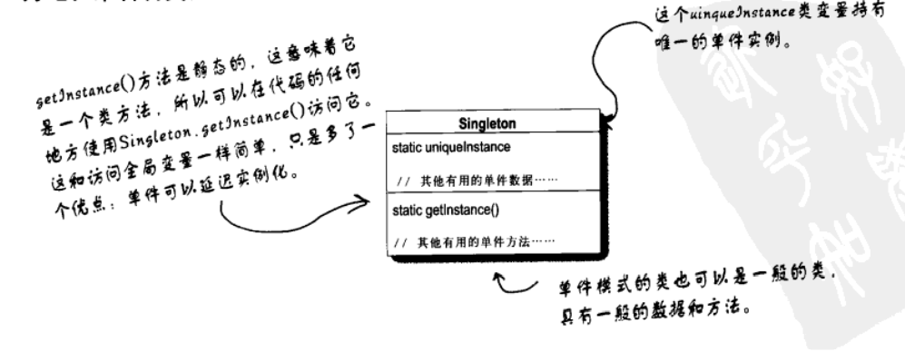
实例
定义时直接实例化
class Singleton {
public:
Singleton* getInstance() {
return instance;
}
private:
static Singleton* instance;
};
Singleton* Singleton::instance = new Singleton;
双重检查锁模式
class Singleton {
public:
Singleton* getInstance() {
if (instance == nullptr) {
static mutex m;
lock_guard guard(m);
if (instance == nullptr) {
instance = new Singleton;
}
}
return instance;
}
private:
static Singleton* instance;
};
Singleton* Singleton::instance = nullptr;
静态局部变量
class Singleton {
public:
Singleton* getInstance() {
static Singleton instance;
return &instance;
}
};
工厂模式
简单工厂模式
定义一个工厂类，它可以根据参数的不同返回不同类的实例，被创建的实例通常都具有共同的父类。
工厂方法模式
当系统中需要引入新的对象时，由于静态工厂方法通过所传入的参数来创建不同的产品，必定要修改工厂类的源代码，违背开闭原则。使用工厂方法模式来实现增加新的方法而不影响已有代码。
在工厂方法模式中，不再提供一个统一的工厂类来创建所有的对象，而是针对不同对象提供不同的工厂。 所有工厂模式都用来封装对象的创建。工厂方法模式通过让子类决定该创建的对象是什么，来达到将对象创建过程封装的目的。
工厂方法模式：工厂方法模式定义了一个创建对象的接口，但由子类决定要实例化的类是哪一个。工厂方法将类的实例化延迟到子类。
抽象工厂模式
由于工厂方法模式每个工厂只生产一类产品，可能会导致系统中存在大量的工厂类，增加系统开销。可以考虑将一些相关的产品组成一些“产品族”，由同一个工厂来生产。
抽象工厂模式：抽象工厂模式定义一个接口，用于创建相关或依赖对象的家族，而不需要明确指定具体类。
UML
简单工厂
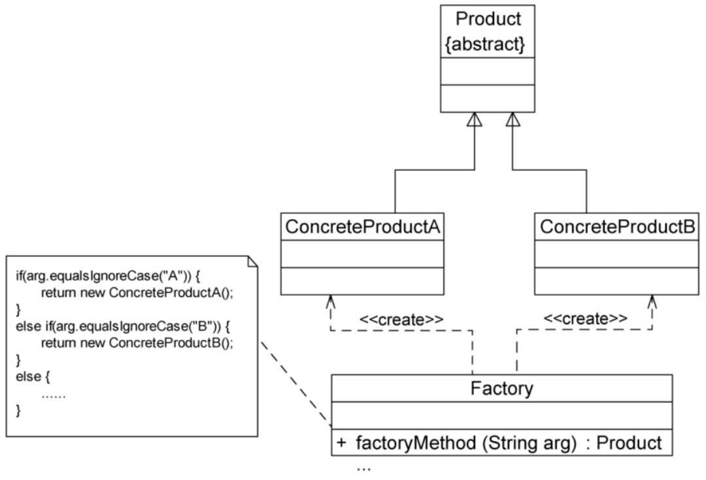
工厂方法
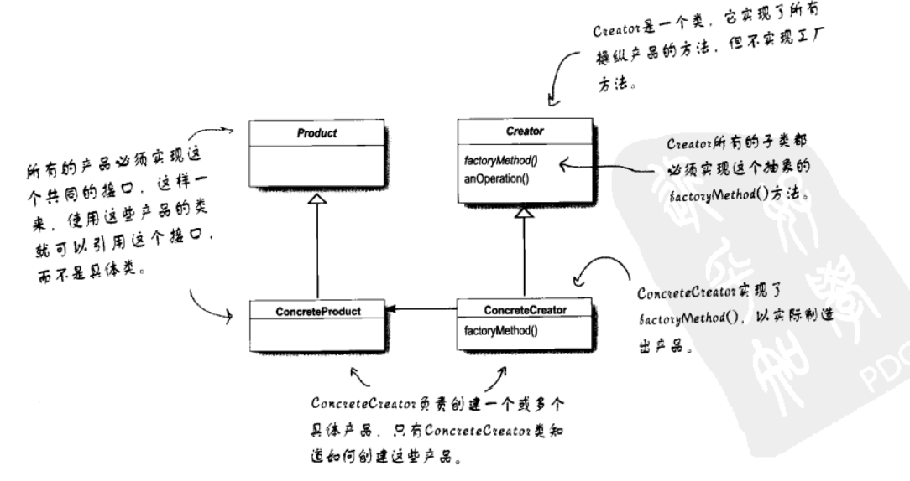
抽象工厂
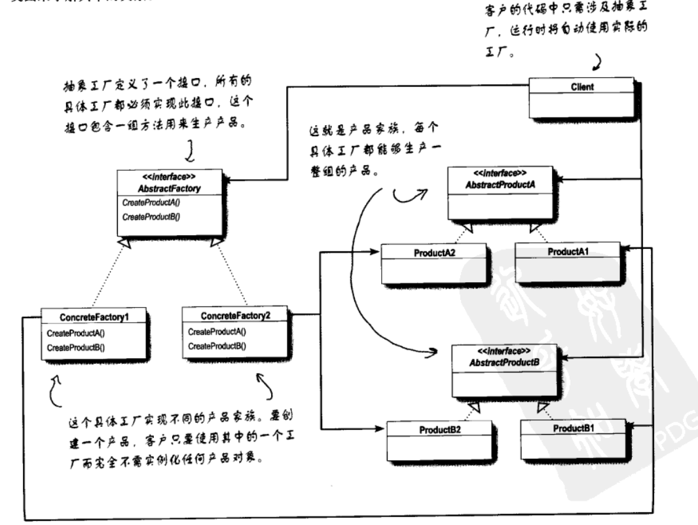
原型模式
使用原型实例指定创建对象的种类，并且通过克隆这些原型创建新的对象。
UML
原型模式
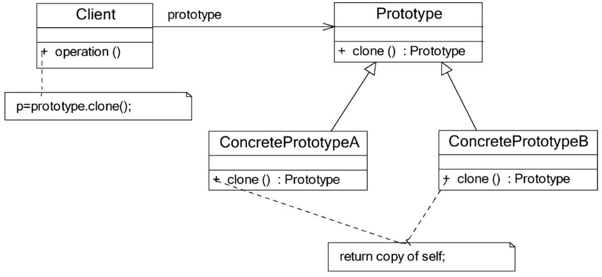
建造者模式
将一个复杂对象的构建与它的表示分离，使得同样的构建过程可以创建不同的表示。
UML
建造者模式
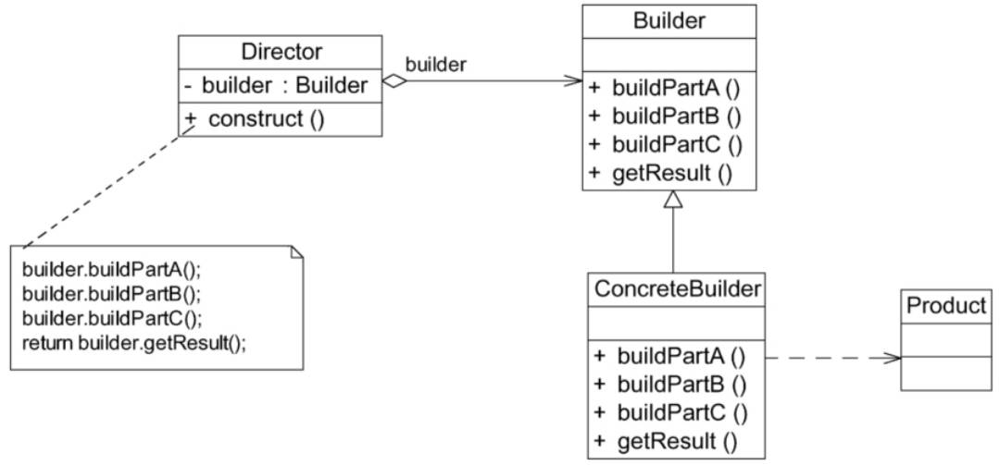
结构型模式
结构型模式关注如何将现有类或对象组织在一起形成更加强大的结构。
| 模式名称 | 定义 |
|---|---|
| 适配器模式 | 将一个接口转换成客户希望的另一个接口，使接口不兼容的那些类可以一起工作 |
| 桥接模式 | 将抽象那部分与其实现部分分离，使它们都可以独立的变化 |
| 组合模式 | 组合多个对象形成树形结构以表示具有“整体-部分”关系的层次结构 |
| 装饰模式 | 动态地给一个对象增加一些额外地职责 |
| 外观模式 | 外部与一个子系统的通信通过一个统一的外观对象进行，为子系统中的一组接口提供一个一致的入口 |
| 享元模式 | 运用共享技术有效地支持大量细粒度对象地复用 |
| 代理模式 | 给某一个对象提供一个代理，并由代理对象控制对原对象的引用 |
适配器模式与外观模式
适配器模式将一个类的接口，转换成客户期望的另一个接口。适配器让原本接口不兼容的类可以合作。
在软件开发的过程中，有时为了完成一项较为复杂的功能，一个类需要和多个其他业务类交互，而这些需要交互的业务经常会作为一个完整的整体出现，由于涉及的类比较多，导致使用时代码较为复杂。因此，需要一个类似服务员的角色，来负责与多个业务类进行交互，而使用这些业务类的类只需和该类交互即可。 外观模式提供了一个统一的接口，用来访问子系统中的一群接口。外观定义了一个高层接口，让子系统更容易使用。
UML
对象适配器模式
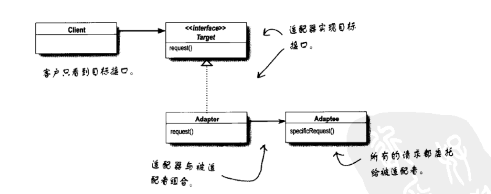
类适配器模式
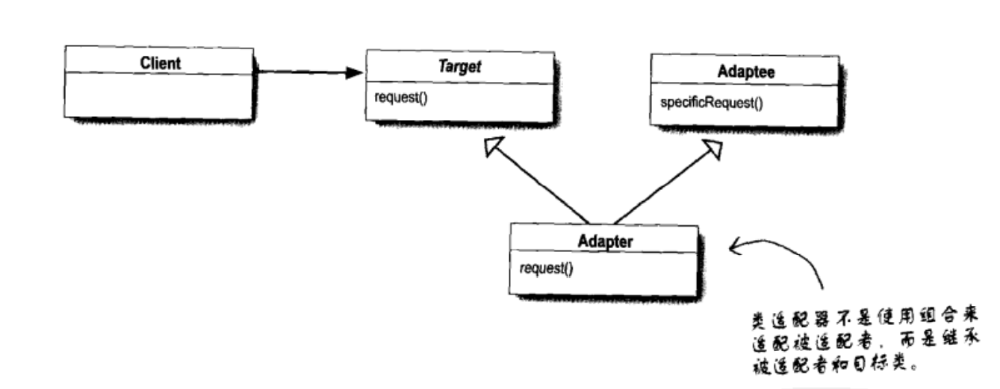
外观模式
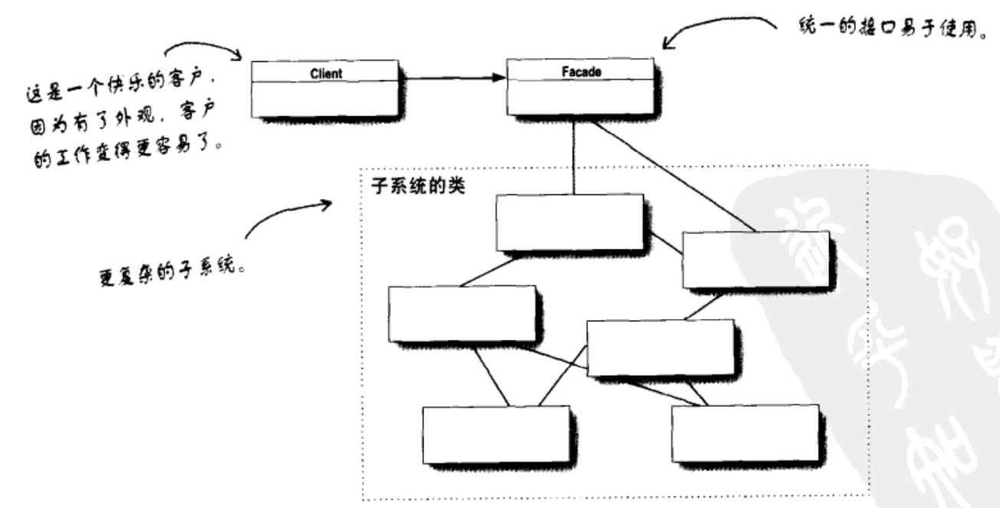
桥接模式
如果软件系统中某个类存在两个独立变化的维度，通过该模式可以将这两个维度分离出来，使两者可以独立扩展。
该模式将两个独立变化的维度设计为两个独立的继承等级结构，并在抽象层建立一个抽象关联，该关联关系类似一条连接两个独立继承结构的桥，故名桥接模式。
桥接模式：将抽象部分与其实现部分分离，使它们都可以独立地变化。
UML
桥接模式
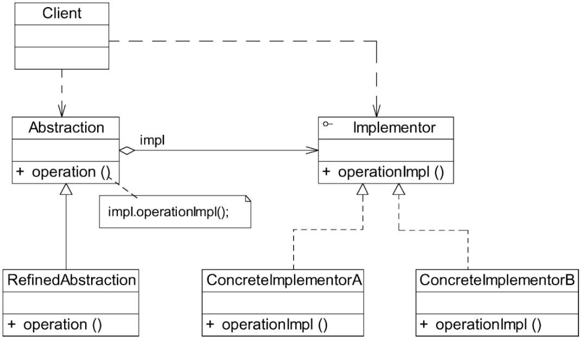
组合模式
组合模式允许将对象合成树形结构来表现“整体/部分”层次结构。组合能让客户以一致的方式处理个别对象以及对象组合。
UML
组合模式
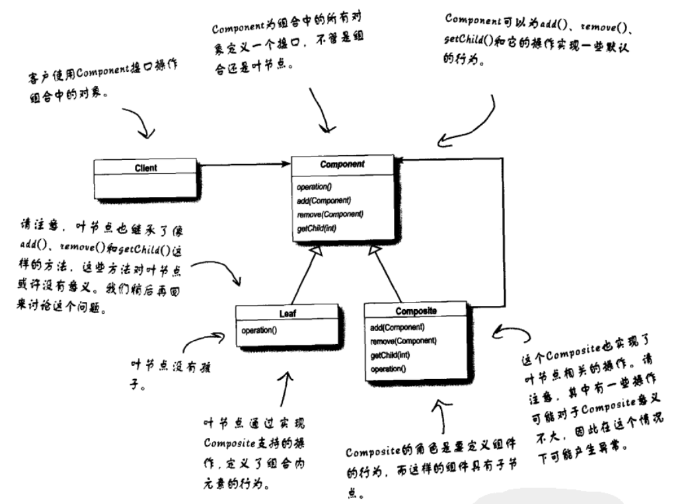
装饰器模式
动态地将责任附加到对象上, 若要扩展功能, 装饰器提供了比继承更有弹性的替代方案。
UML
装饰器模式
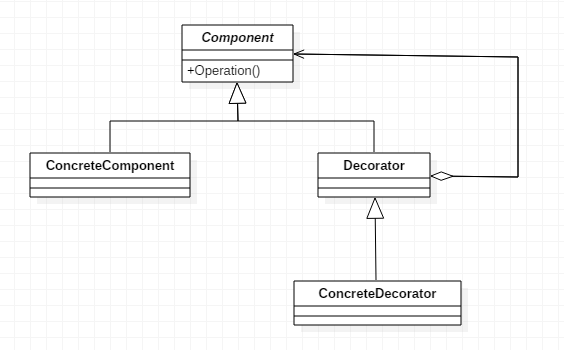
实例
// 咖啡店的例子
class Beverage {
public:
Beverage(string description = "") : description(description) {}
const string& getDescription() { return description; }
virtual double cost() = 0;
protected:
string description;
};
// 装饰器（调料）
class CondimentDecorator : public Beverage {
public:
CondimentDecorator(string description = "") : Beverage(description) {}
};
// Espresso 是一种饮料
class Espresso : public Beverage {
public:
Espresso() : Beverage("Espresso") {}
virtual double cost() override {
return 9.9;
}
};
// 摩卡是一种调料
class Mocha : public CondimentDecorator {
public:
Mocha(Beverage* beverage) : beverage(beverage), CondimentDecorator(beverage->getDescription() + ", Mocha") {}
virtual double cost() override {
return 0.2 + beverage->cost();
}
private:
Beverage* beverage;
};
享元模式
当一个软件在运行时产生的对象数目太多，将导致运行代价过高，带来系统性能下降的问题。享元模式通过共享技术实现相同或相似的对象的重用。
享元模式：运用共享技术有效地支持大量细粒度对象的复用。系统只使用少量的对象，而这些对象都很相似，状态变化很小，可以实现对象的多次复用。
UML
享元模式
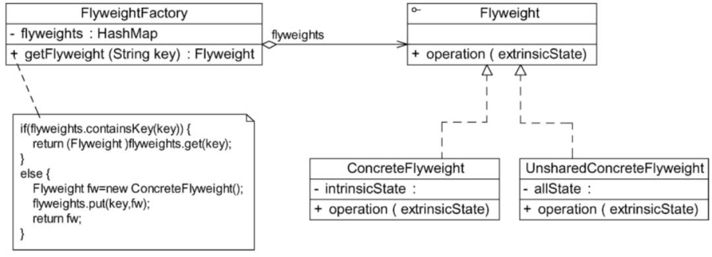
-
Flyweight（抽象享元类）：通常是一个接口或抽象类，其中包含了向外界提供享元对象的内部数据的方法，以及可以通过这些方法设置的外部数据。
-
ConcreteFlyweight（具体享元类）：实现抽象享元类，其实例被称为享元对象。
-
UnsharedConcreteFlyweight（非共享具体享元类）：并不是所有的享元类都需要被共享，不能被共享的子类可设计为非共享具体享元类。
-
FlyweightFactory（享元工厂类）：用于创建并管理享元对象。
代理模式
给一个对象提供一个代理，并由代理对象控制对原对象的引用。
UML
代理模式
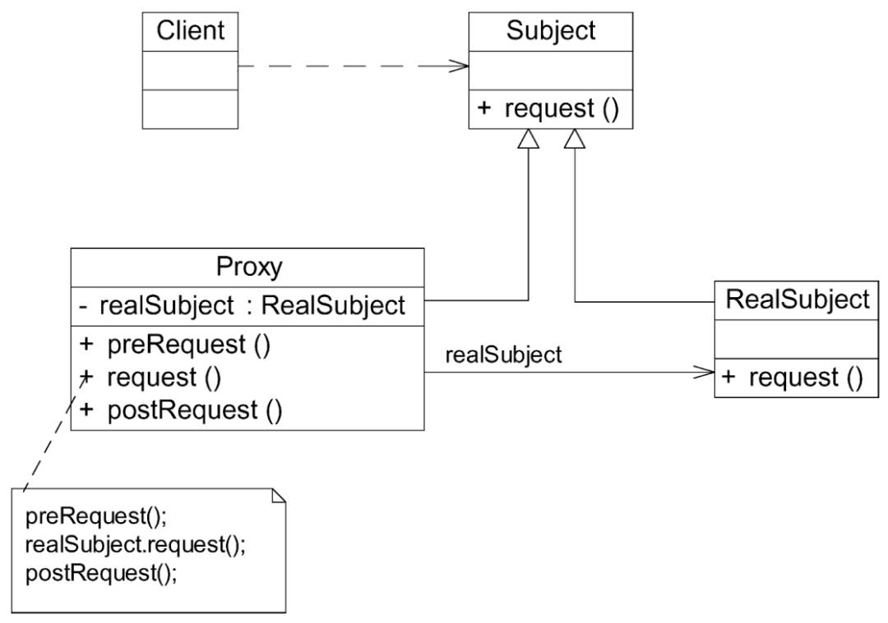
-
Subject： 真实主题和代理主题的共同接口
-
Proxy：代理主题角色内部包含了对真实主题的引用，可以操作真实主题对象。在代理主题角色中提供一个与真实主题角色相同的接口，以便在任何时候都可以代替真实主题。
-
RealSubject：定义代理角色所代表的真实对象。
常用的代理模式
远程代理
为一个位于不同地址空间的对象提供一个本地的代理对象，这个不同的地址空间可以在同一台主机中，也可以在另一台主机中。
虚拟代理
如果需要创建一个资源消耗较大的对象，先创建一个消耗较小的对象进行表示，真实对象只在需要时才进行创建。
保护代理
控制一个对象的访问。
缓冲代理
为某一个目标操作的结果提供临时存储空间。
智能引用代理
当一个对象被引用时，提供一些额外的操作。
行为型模式
行为型模式关注系统中对象之间的交互，研究系统在运行时对象之间的相互通信与协作，进一步明确对象的职责。
| 模式名称 | 定义 |
|---|---|
| 职责链模式 | 避免将请求发送者与接受者耦合在一起，让多个对象都有机会接受请求，将这些对象连接成一条链，并且沿着这条链传播请求，直到有对象处理它为止 |
| 命令模式 | 将一个请求封装为一个对象，从而可用不同的请求读客户进行参数化，对请求排队或者记录请求日志，以及支持可撤销的操作 |
| 解释器模式 | 定义一个语言的文法，并且建立一个解释器来解释该语言中的句子 |
| 迭代器模式 | 提供一种方法来访问聚合对象，而不用暴露这个对象的内部表示 |
| 中介者模式 | 用一个中介对象来封装一系列的对象交互，中介者使各对象不需要显式地相对引用，从而使其耦合松散，而且可以独立地改变它们之间地交互 |
| 备忘录模式 | 在不破坏封装地前提下，捕获一个对象地内部状态，并在该对象之外保存这个状态，这样可以在以后将对象恢复到原先保存的状态 |
| 观察者模式 | 定义对象之间的一种一对多依赖关系，使得每当一个对象状态发生改变时，其相关依赖对象皆得到同时并会自动更新 |
| 状态模式 | 允许一个对象在其内部状态改变时改变它的行为 |
| 策略模式 | 定义一系列算法类，将每一个算法封装起来，并让它们可以相互替换，使得算法的变化可独立于使用它的客户 |
| 模板方法模式 | 定义一个操作中算法的框架，而将一些步骤延迟到子类中，使得子类可以不改变一个算法的结构即可重定义该算法的某些步骤 |
| 访问者模式 | 提供一个作用于某对象结构中的各元素的操作表示，使得可以在不改变各元素类的前提下定义作用于这些元素的新操作 |
职责链模式
避免将请求发送者和接收者耦合在一起，让多个对象都有机会接受请求，将这些对象连接成一条链，并且沿着这条链传递请求，直到有对象处理它为止。
UML
职责链模式
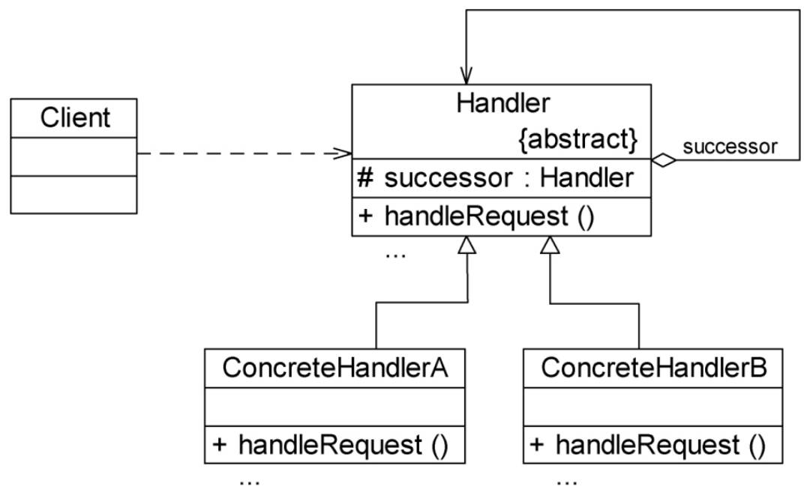
分类
-
纯的职责链模式：一个具体的矗立着对象只能在两个行为中选择：要么承担全部责任，要么将责任推给下家。不逊于出现某一个具体处理者对象在承担一部分或全部责任之后将责任向下传递的情况。不能出现某个请求未被任何一个处理者对象处理的情况。
-
不纯的职责链模式：允许某个请求被一个具体处理者部分处理后再向下传递，或者一个具体处理者处理完某请求后其后继处理者可以继续处理该请求。一个请求最终可以不被任何处理者对象接受。
命令模式
将请求封装成对象，以便使用不同的请求、队列或日志来参数化其他对象。
UML
命令模式
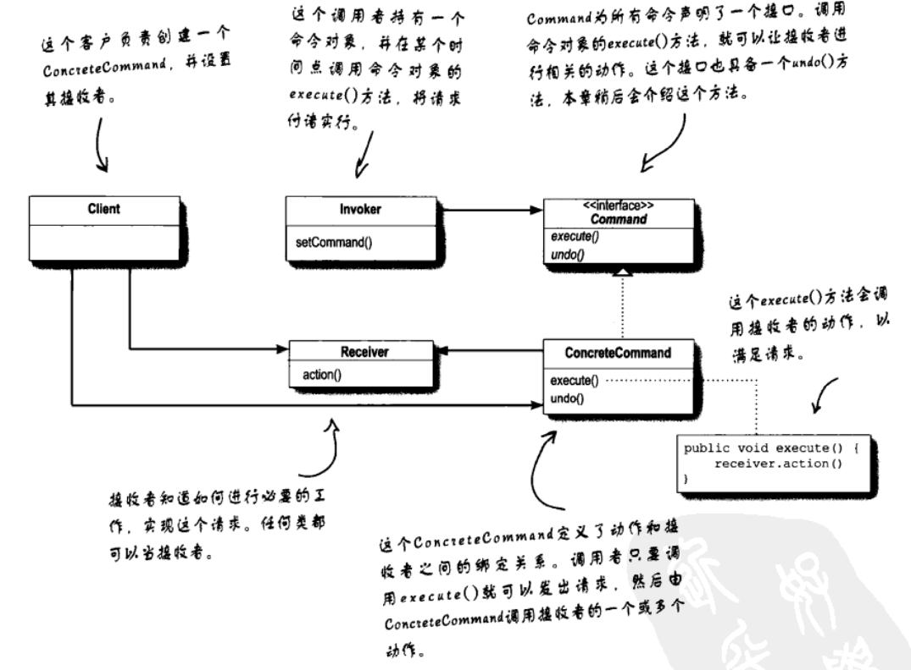
解释器模式
解释器模式用于描述如何使用面向对象语言构建一个简单的语言解释器。 解释器模式：定义一个语言的文法，并且建立一个解释器来解释该语言中的句子。
UML
解释器模式
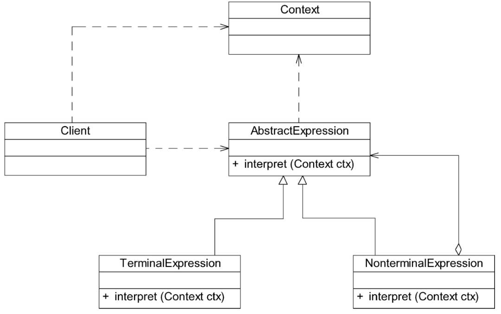
-
TerminalExpression：终结符表达式
-
NonterminalExpression： 非终结符表达式
-
Context：用户存储解释器之外的一些全局信息
迭代器与组合模式
迭代器模式提供一种方法顺序访问一个聚合对象中的各个元素，而又不暴露其内部的表示。
UML
迭代器模式
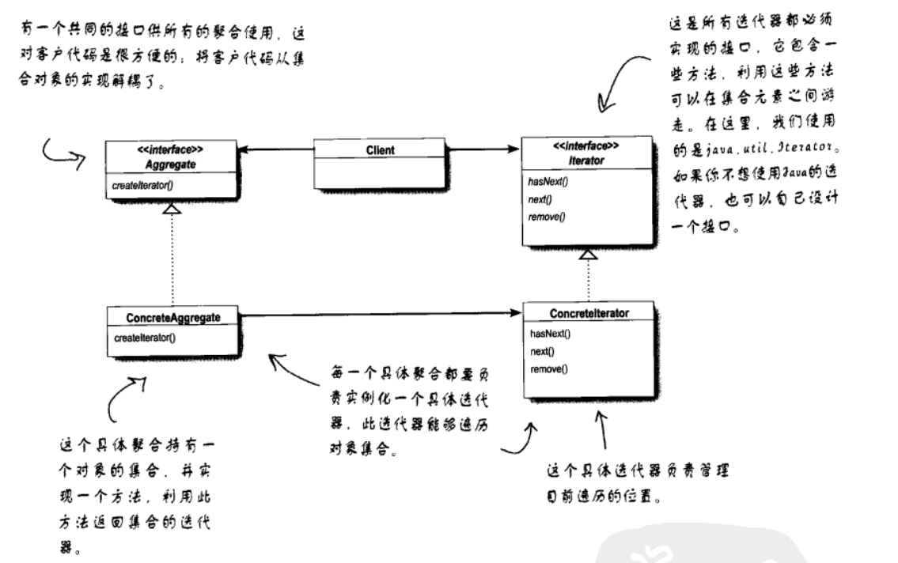
中介者模式
在某些软件中，某些类 / 对象之间的相互调用关系错综复杂，需要一个中间类来协调这些类 / 对象之间的关系，以降低系统的耦合度。 中介者模式：用一个中介对象来封装一系列的对象交互。中介者使各对象不需要显式的相互引用，而从使其耦合松散，而且可以独立地改变它们之间地交互。
UML
中介者模式
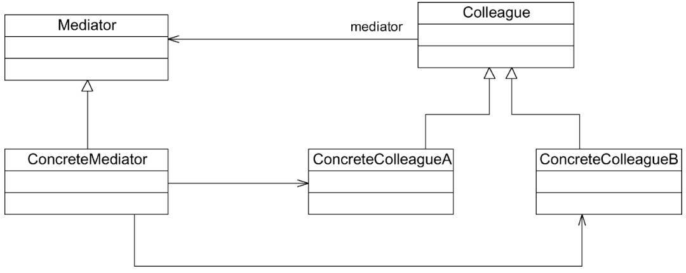
备忘录模式
在不破坏封装的前提下，捕获一个对象的内部状态，并在该对象之外保存这个状态，这样可以在以后将对象恢复到原先保存的状态。
UML
备忘录模式
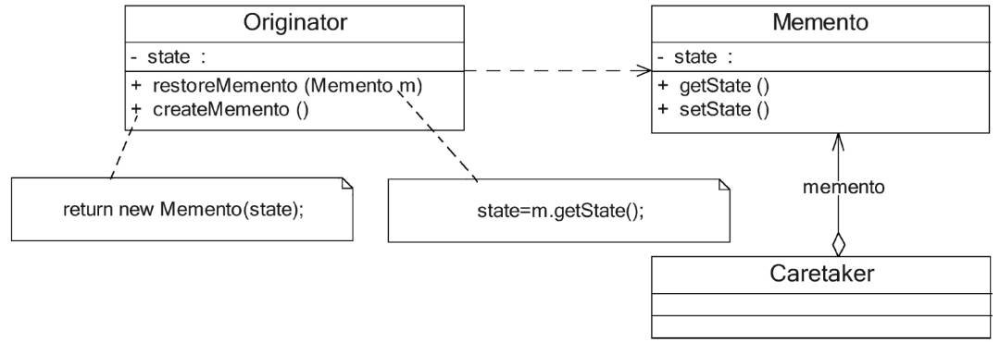
-
Originator：创建一个备忘录，并存储其当前的内部状态，也可以使用备忘录来恢复其内部状态。
-
Memento：存储 Originator 的内部状态，根据 Originator 来决定保存哪些内部状态。
-
Caretaker：负责保存备忘录，但是不能对备忘录的内容进行操作或检查。（即只负责存储对象，不负责修改对象）
观察者模式
定义了对象之间的一对多依赖, 当一个对象状态发生改变时, 它的所有依赖对象都会收到通知并自动更新
作用
帮助对象知悉现状, 不会错过对象感兴趣的事, 并在运行时决定是否继续被通知。
UML
观察者模式
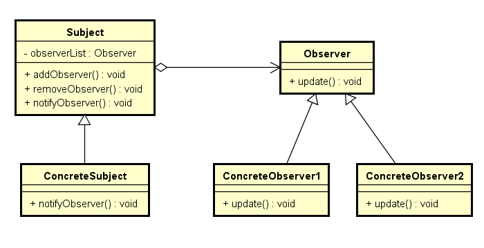
实例
// 定义接口
class Observer {
public:
virtual void update(int arg) = 0;
virtual ~Observer() = 0;
};
class Subject {
public:
virtual void addObserver(Observer*) = 0;
virtual void removeObserver(Observer*) = 0;
virtual void notifyObservers() = 0;
virtual ~Subject() = 0;
};
// 实现
class ConcreteObserver : public Observer {
public:
virtual void update(int arg) {
cout << arg << endl;
}
};
class ConcreteSubject : public Subject {
public:
virtual void addObserver(Observer* observer) override {
observers.push_back(observer);
}
virtual void removeObserver(Observer* observer) override {
auto pos = find(observers.begin(), observers.end(), observer);
if (pos != observers.end()) {
observers.erase(pos);
}
}
virtual void notifyObservers() override {
for (auto observer : observers) {
observer->update(0);
}
}
private:
vector<Observer*> observers;
};
状态模式
状态模式用于解决系统中复杂对象的状态转换以及不同状态下行为的封装问题。当系统中某个对象存在多个状态，这些状态之间可以进行转换，而且对象在不同状态下行为不相同时可以使用状态模式。
状态模式：允许一个对象在其内部状态改变时改变它的行为。
UML
状态模式
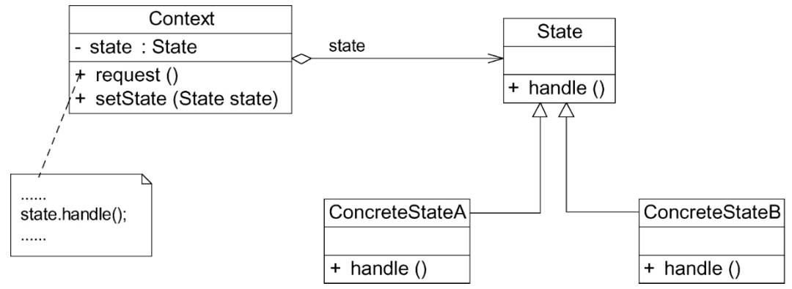
策略设计模式
策略模式定义了算法族，分别封装起来，让他们之间可以相互替换，使算法的变化独立于使用算法的客户。
UML
策略模式 - 面向对象
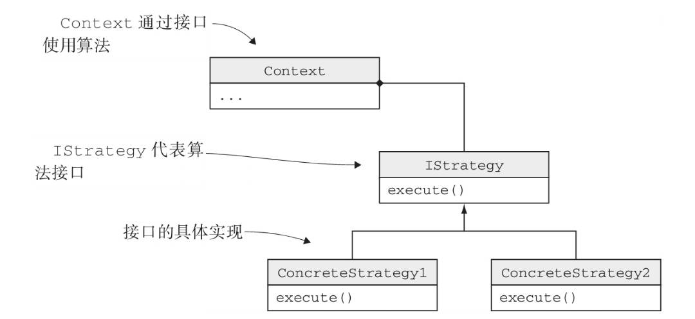
策略模式 - 函数接口
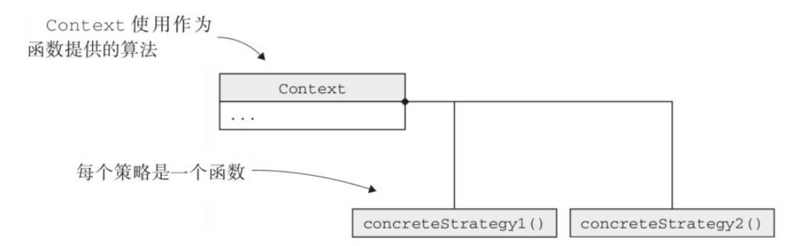
实例
// 定义接口
class FlyBehavior {
public:
virtual void fly() = 0;
};
class Duck {
private:
FlyBehavior* flyBehavior;
public:
// 可变的部分拆分出来，将其委托给行为类
virtual void performFly() {
flyBehavior->fly();
}
// 不变的部分
virtual void swim() {
cout << "all duck can swim" << endl;
}
Duck(FlyBehavior* flyBehavior) : flyBehavior(flyBehavior) {}
// 使用 set 更改行为
void setFlyBehevior(FlyBehavior* flyBehavior) { this->flyBehavior = flyBehavior; }
};
// 实现接口
class FlyWithWings : public FlyBehavior {
public:
virtual void fly() override {
cout << "FlyWithWings" << endl;
}
};
class CannotFly : public FlyBehavior {
public:
virtual void fly() override {
cout << "CannotFly" << endl;
}
};
int main()
{
FlyBehavior* fly_with_wings = new FlyWithWings;
Duck duck(fly_with_wings);
duck.performFly();
FlyBehavior* cannot_fly = new CannotFly;
duck.setFlyBehevior(cannot_fly);
duck.performFly();
}
简化
接口数目较少时，可以使用函数接口进行简化。
class Duck {
public:
using FlyBehavior = function<void()>;
private:
FlyBehavior flyBehavior;
public:
// 可变的部分拆分出来，将其委托给行为类
virtual void performFly() {
flyBehavior();
}
// 不变的部分
virtual void swim() {
cout << "all duck can swim" << endl;
}
Duck(FlyBehavior flyBehavior) : flyBehavior(flyBehavior) {}
// 使用 set 更改行为
void setFlyBehevior(FlyBehavior flyBehavior) { this->flyBehavior = flyBehavior; }
};
int main()
{
Duck duck([]() { cout << "FlyBehavior" << endl; });
duck.performFly();
}
模板方法
模板方法模式在一个方法中定义一个算法的骨架，而将一些步骤延迟到子类中。模板方法使得子类可以在不改变算法结构的情况下，重新定义算法中的某些步骤。
UML
模板方法
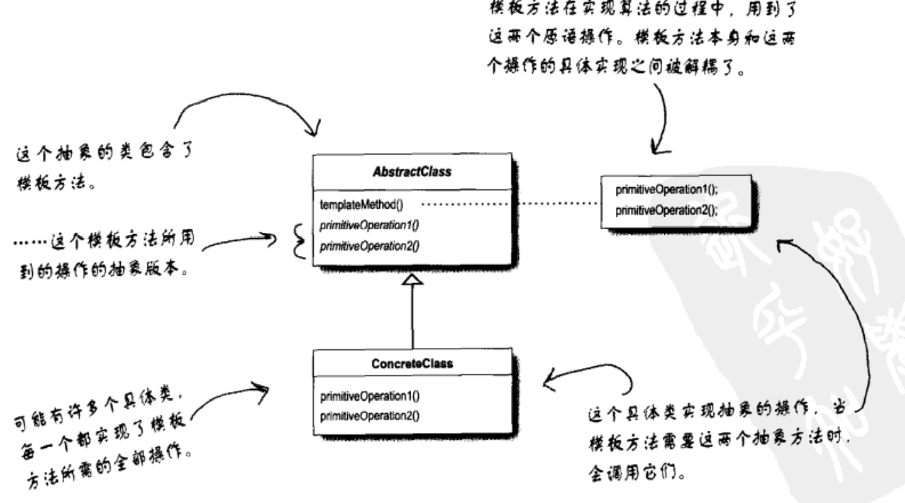
实例
class AbstractClass {
public:
void templateMethod() {
primitiveOperation1();
primitiveOperation2();
concreteOperation();
hook();
}
virtual void primitiveOperation1() = 0; // 子类实现
virtual void primitiveOperation2() = 0;
void concreteOperation() {}
virtual void hook() {} // 子类视情况而定是否覆盖
};
访问者模式
提供一个作用于某对象结构中的各元素操作表示，它使得可以在不改变各元素类的前提下定义作用于这些元素的新操作。
UML
访问者模式
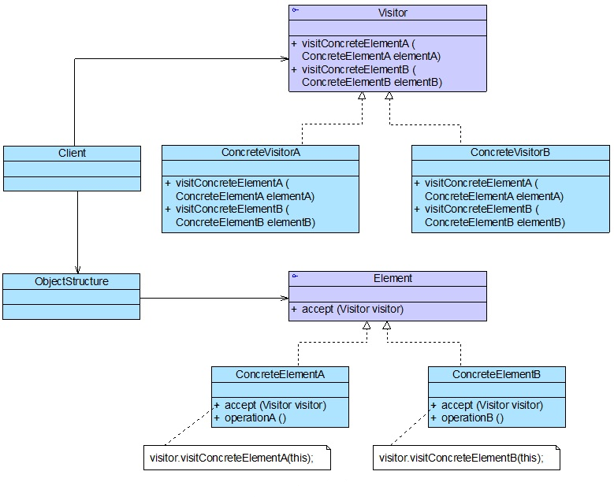
单一职责原则
一个类只负责一个功能领域内中的相应职责。（就一个类而言，应该只有一个引起它变化的原因）
开闭原则
一个软件实体应当对扩展开放，对修改关闭。
里氏代换原则
如果对每个类型为 S 的对象 o1，都有类型为 T 的对象 o2，使得以 T 为定义的所有程序 P 在所有的对象 o1 都代换 o2 时，程序 P 的行为没有变化，那么类型 S 是 类型 T 的子类型。（所有引用基类的地方必须能透明的使用其子类对象）
依赖倒置原则
抽象不应该依赖于细节，而细节应依赖于抽象。
接口隔离原则
使用多个专门的接口，而不使用单一的总接口。（客户端不应该依赖那些它不需要的接口）
合成复用原则
尽量使用对象组合，而不是继承来达到复用目的。
最少知识原则（迪米特法则）
一个软件实体应当尽可能少地与其他实体发生相互作用。 不要和“陌生人”说话，只与“朋友”通信。其中朋友包括：
- 当前对象本身
- 以参数形式传入到当前对象方法中的对象
- 当前对象地成员对象（若成员对象是一个集合，则集合中的元素也都是朋友）
- 当前对象所创建地对象